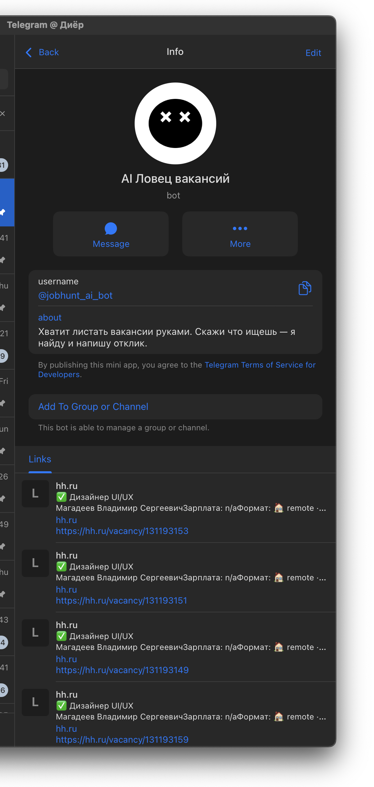

Ритуал, который никто не любит
Каждый, кто искал работу, знает этот ритуал. Утро: открыть hh.ru, открыть Habr, заглянуть в LinkedIn. Проскроллить. Отфильтровать. Прочитать 50 описаний. Сохранить 5. Написать 3 сопроводительных. Потратить 45 минут. Завтра повторить.
Hunter автоматизирует этот процесс.
Push вместо pull
Три раза в день бот скрейпит hh.ru и Habr по запросам пользователя. Каждая вакансия проходит через персональный скоринг. Утром приходит дайджест в Telegram.
Вакансии ниже 40 баллов скрыты. Видно только то, что реально подходит.

Как работает скоринг
Каждая вакансия получает оценку 0–100 на основе четырёх факторов:
Навыки — 40%. Взвешенное совпадение. Первый навык в списке весит больше, последний — меньше. То, что человек вводит первым — его сильная сторона.
Зарплата — 25%. Пересечение диапазонов. Нормализация валют.
Формат — 20%. Удалёнка, гибрид, офис. Точное совпадение — 100 баллов. Гибрид для удалёнщика — 50.
Индустрия — 15%. 22 отрасли с наборами ключевых слов.
Красные флаги делят оценку пополам. Компания из чёрного списка — ноль.
Сопроводительные за одно нажатие
Находишь интересную вакансию — нажимаешь «Письмо». Claude генерирует сопроводительное на основе опыта и навыков пользователя, с учётом специфики вакансии.
Не нравится — «Другой вариант» генерирует новое с другой структурой.
На каждое письмо уходит 10–15 секунд вместо 10–15 минут.
14 шагов до первого дайджеста
При старте бот проводит через онбординг: от имени и навыков до зарплатной вилки, формата работы и красных флагов. Каждый шаг — inline-кнопки, можно пропустить или вернуться.
Сразу после завершения — первый скрейп и дайджест.
Фримиум
Бесплатно: 5 сопроводительных, 15 вакансий в дайджесте. Pro: 500 Stars/мес (~350 ₽) — без ограничений. Или кредиты поштучно.
Подписка для активных, кредиты для тех, кому нужно одно-два письма.
Стек
TypeScript, grammY, SQLite (WAL), node-cron, Claude CLI (Sonnet), cheerio. Railway 24/7. 3 400+ строк кода. Деплой через git push.
Моя роль
Единственный участник проекта.
- Продуктовая стратегия и монетизация
- UX бота: онбординг, дайджест, пагинация, inline-клавиатуры
- Алгоритм скоринга
- Разработка — TypeScript, скрейперы hh.ru и Habr, интеграция Claude
- Деплой и мониторинг (Railway 24/7)